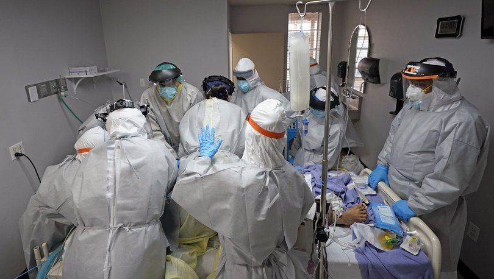

SAĞLIK
DSÖ, devam eden aşı krizinin "salgını kalıcılaştıran skandal bir eşitsizlik" olduğu uyarısında bulundu
Dünya Sağlık Örgütü (DSÖ) Genel Direktörü Tedros Adhanom Ghebreyesus, yeni tip koronavirüs (Covid-19) aşılarının dünya genelindeki adaletsiz dağıtımına tepki göstererek, "Devam eden aşı krizi, salgını kalıcılaştıran skandal bir eşitsizliktir." uyarısında bulundu. DSÖ'nün en üst karar alma organı olan Dünya Sağlık Asamblesi'nin (DSA) 74'üncüsü İsviçre'nin Cenevre kentinde video konferans yöntemiyle devam ediyor.
Dünya Sağlık Örgütü (DSÖ) Genel Direktörü Tedros Adhanom Ghebreyesus, yeni tip koronavirüs (Covid-19) aşılarının dünya genelindeki adaletsiz dağıtımına tepki göstererek, "Devam eden aşı krizi, salgını kalıcılaştıran skandal bir eşitsizliktir" uyarısında bulundu.
Genel Direktör Ghebreyesus, DSA'da yaptığı konuşmada, Covid-19 aşılarının adaletsiz dağılımını eleştirdi, halkının büyük kısmını aşılayan ülkelere ve aşı üreticilerine çağrı yaptı.
Tüm aşıların yüzde 75'inden fazlasının sadece 10 ülkede uygulandığına dikkati çeken Ghebreyesus, "Bunu söylemenin diplomatik bir yolu yok, (çünkü) dünyadaki aşıların çoğunu yapan ve satın alan küçük bir grup ülke, dünyanın geri kalanının kaderini kontrol ediyor" ifadelerini kullandı.
Ghebreyesus, "küresel çapta süregelen aşı krizinin, salgını kalıcılaştıran skandal bir eşitsizlik" olduğu yorumunda bulunarak, tüm ülkelerin nüfusunun yüzde 10'nun eylül ayına, yüzde 30'unun da yıl sonuna kadar aşılanması için Covid-19 Aşıları Küresel Erişim Programı'na (COVAX) aşı bağışlanması çağrısında bulundu.
"Bu, sadece dört ayda 250 milyon daha fazla insanı aşılamak anlamına geliyor" diyen Ghebreyesus, aşı üreticilerinden bu yıl ürettikleri aşıların yüzde 50'sini COVAX'a vermelerini istedi.
"SALGINDA BAŞA DÖNEBİLİRİZ" UYARISI
Ghebreyesus, mevcut onaylanmış aşıların etkinliğini "önemli ölçüde zayıflatan" hiçbir varyantın ortaya çıkmadığını vurgulayarak, "Ancak durumun böyle kalacağına dair bir garanti yok.
Bu virüs sürekli değişim gösteriyor. Gelecekteki değişiklikler (tedavi) araçlarımızı etkisiz hale getirebilir ve bizi (salgında) başa döndürebilir. Çok net olmalıyız, salgın bitmedi. Tüm ülkelerde (virüsün) bulaşması kontrol altına alınıncaya kadar da bitmeyecek" şeklinde konuştu.
Ghebreyesus, isim vermeden özellikle çocukları ve risk grubunda olmayan diğer grupları aşılayan ülkelere tepki gösterdi, bu ülkelerin aşıya erişim güçlüğü yaşayan ülkelerdeki sağlık çalışanları ve yüksek risk grubundaki insanların yaşamını tehlikeye attığına atıfta bulundu.
DSÖ'NÜN COVAX PROJESİ HENÜZ HEDEFİNE ULAŞAMADI
COVAX yoluyla 125 ülke ve "ekonomiye" şubat ayından bu yana 72 milyon doz aşı gönderildiğini aktaran Ghebreyesus, bu miktarın, söz konusu ülkelerin nüfusunun yüzde 1'ine "zar zor" yettiğini vurguladı.
DSÖ, Küresel Aşı ve Bağışıklama İttifakı (GAVI) ve Salgın Hastalıklara Hazırlık İçin Yenilik Koalisyonunca (CEPI) yürütülen ortak girişimle, 2021'de orta ve düşük gelirli 92 ülkeye 1,3 milyar doz Covid-19 aşısı dağıtılmasını planlamıştı.
DSÖ'den 11 Mart'ta yapılan açıklamada ise COVAX kapsamında mayıs ayına kadar 237 milyon Covid-19 aşısı sevk edilmesinin beklendiği duyurulmuştu.
MACRON VE MERKEL'DEN SALGIN ANTLAŞMASI ÖNERİSİ
Fransa Cumhurbaşkanı Emmanuel Macron ve Almanya Başbakanı Angela Merkel de DSA'da video mesajla DSÖ'ye üye 194 ülkeye hitap etti.
Her iki lider de DSÖ'nün finansal açıdan güçlendirilmesi ve gelecekteki salgınları önlemek için yeni bir uluslararası "salgın antlaşması" yapılması fikrine destek verdi.
Macron, "Bu salgından öğrenebileceğimiz ilk ders, ancak birlikte başarılı olabileceğimizdir. Hiçbir ülke (tek başına) kendini kurtaramaz ve hiçbir ülke diğerlerini kurtaramaz" değerlendirmesinde bulundu.
Salgına karşı mücadelenin tek yolunun uluslararası iş birliğinden geçtiğini anlatan Macron, ülkelere DSA'da "bir salgın antlaşmasını" kabul etmeye çağırdı.
Almanya Başbakanı Merkel de Macron'un dile getirdiği "salgın antlaşması" tavsiyesine katıldığını belirtti.
"Salgın, bize özellikle uluslararası iş birliğinin ne kadar önemli olduğunu hatırlatıyor" diyen Merkel, salgına dair bir antlaşma için DSA'da önerilerin ele alınmasını ve ortak kurullar oluşturulmasını tavsiye etti.